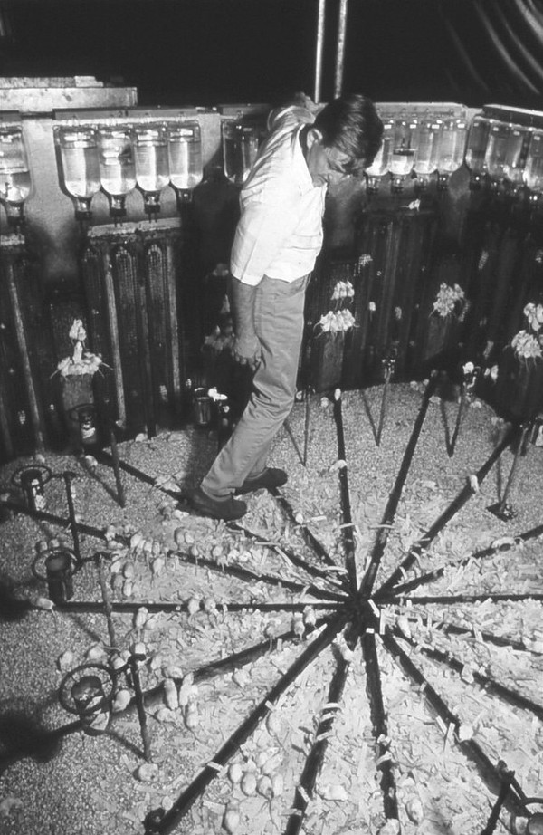
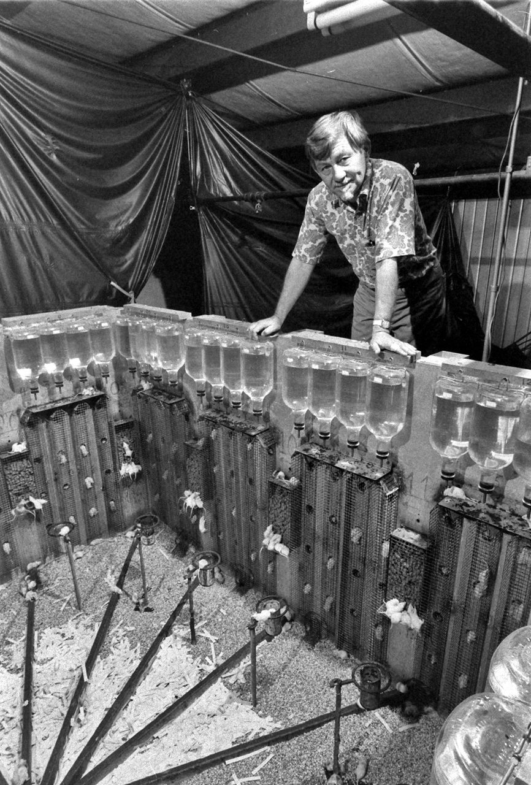

В результаті численних дослідів над колоніями гризунів Келхун сформулював новий термін, «поведінкова раковина» (behavioral sink), що означає перехід до деструктивної та девіантної поведінки в умовах перенаселення i скупченості.
Своїми дослідженнями Джон Келхун набув певну популярність в 60-ті роки, так як багато людей в західних країнах, що переживали післявоєнний бебі-бум, стали замислюватися про те, як перенаселення вплине на суспільні інститути i на кожну людину зокрема.
Свій найвідоміший експеримент, що змусив замислитися про майбутнє ціле покоління, він провів у 1972 році спільно з Національним інститутом психічного здоров’я (NIMH).
Метою експерименту «Всесвіт-25» був аналіз впливу щільності популяції на поведінкові патерни гризунів. Келхун побудував справжній рай для мишей в умовах лабораторії.
Був створений бак розмірами два на два метри i висотою півтора метра, звідки піддослідні не могли вибратися.
Усередині бака підтримувалася постійна комфортна для мишей температура (+20 °C), була присутня в достатку їжа i вода, створені численні гнізда для самок.
Щотижня бак очищався i підтримувався в постійній чистоті, були вжиті всі необхідні заходи безпеки: виключалося поява в баку хижаків або виникнення масових інфекцій.
Піддослідні миші були під постійним контролем ветеринарів, стан їх здоров’я постійно відстежували. Система забезпечення кормом i водою була настільки продумана,
що 9500 мишей могли б одночасно харчуватися, не відчуваючи жодного дискомфорту, i 6144 мишей споживати воду, також не відчуваючи ніяких проблем.
Простору для мишей було більш ніж достатньо, перші проблеми відсутності укриття могли виникнути тільки при досягненні чисельності популяції понад 3840 особин.
Однак такої кількості мишей ніколи в баку не було, максимальна чисельність популяції відзначена на рівні 2200 мишей.

Експеримент стартував з моменту поміщення всередину бака чотирьох пар здорових мишей,яким знадобилося зовсім небагато часу, щоб освоїтися, усвідомити, в яку мишачу казку вони потрапили, i почати прискорено розмножуватися.
Період освоєння Келхун назвав фазою А, проте з моменту народження перших дитинчат почалася друга стадія B. Це стадія експоненціального зростання чисельності популяції в баку в ідеальних умовах, число мишей подвоювалася кожні 55 днів.
Починаючи з 315 дня проведення експерименту темп зростання популяції значно сповільнилося, тепер чисельність подвоювалася кожні 145 днів, що ознаменувало собою вступ у третю фазу C.
У цей момент в баку проживало близько 600 мишей, сформувалася певна ієрархія i певне соціальне життя. Стало фізично менше місця, ніж було раніше.
З’явилася категорія «знедолених», яких виганяли в центр бака, вони часто ставали жертвами агресії. Відрізнити групу «знедолених» можна було за покусаними хвостами, віддранною шкурою i слідами крові на тілі.
Знедолені складалися, насамперед, з молодих представників, що не знайшли для себе соціальної ролі в мишачій ієрархії. Проблема відсутності відповідних соціальних ролей була викликана тим, що в ідеальних умовах бака миші жили довго,
немолоді миші не звільняли місця для молодих гризунів. Тому часто агресія була спрямована на нові покоління, що народжувались в баці. Після вигнання самці ламалися психологічно, менше проявляли агресію,
що не бажали захищати своїх вагітних самок i виконувати будь-які соціальні ролі. Хоча періодично вони нападали або на інших особин з товариства «знедолених», або на будь-яких інших мишей.
Самки, які готуються до народження, ставали все більш нервовими, так як в результаті зростання пасивності серед самців вони ставали менш захищеними від випадкових атак.
В результаті самки стали проявляти агресію, часто битися, захищаючи потомство. Однак агресія парадоксальним чином не була спрямована тільки на оточуючих, не менша агресивність проявлялась по відношенню до своїх дітей. Часто самки вбивали своїх дитинчат i перебиралися у верхні гнізда, ставали агресивними відлюдниками i відмовлялися від розмноження. В результаті народжуваність значно впала, а смертність молодняку досягла значних рівнів.
Незабаром почалася остання стадія існування мишачого раю – фаза D або фаза смерті, як її назвав Джон Келхун. Символом цієї стадії стала поява нової категорії мишей, що отримала назву «красиві».
До них відносили самців, що демонстрували нехарактерну для виду поведінку, відмовлялися битися i боротися за самок, i територію, не виявляли жодного бажання паруватися, схильних до пасивного стилю життя.
«Красиві» тільки їли, пили, спали i очищали свою шкірку, уникаючи конфліктів i виконання будь-яких функцій. Подібну назву вони отримали тому, що на відміну від більшості інших мешканців бака на їхньому тілі не було слідів жорстоких битв, шрамів i віддранної шкіри,
їх нарцисизм i самозамиловування стали легендарними. Також дослідника вразило відсутність бажання у «красивих» злучатися i розмножуватися, серед останньої хвилі народжень в баку «красиві» i самки-одиночки, які відмовляються розмножуватися i тікають у верхні гнізда бака, стали більшістю.

Середній вік миші в останній стадії існування мишачого раю становив 776 днів, що на 200 днів перевищує верхню межу репродуктивного віку. Смертність молодняку становила 100%, кількість вагітностей була незначною, а незабаром склало 0. Вимираючі миші практикували гомосексуалізм, девіантну i нез’ясовано агресивну поведінку в умовах надлишку життєво необхідних ресурсів. Процвітав канібалізм при одночасному достатку їжі, самки відмовлялися виховувати дитинчат i вбивали їх. Миші стрімко вимирали, на 1780 день після початку експерименту помер останній мешканець «мишачого раю».
Передбачаючи подібну катастрофу, Д. Келхун за допомогою колеги доктора Х. Марден провів ряд експериментів на третій стадії фази смерті. З бака були вилучені кілька маленьких груп мишей i переселені в настільки ж ідеальні умови, але ще й в умовах мінімальної населеності i необмеженого вільного простору. Ніякої скупченості i внутрішньовидової агресії. По суті, «красивим» i самкам-одиначкам були відтворені умови, при яких перші 4 пари мишей в баку експоненціально розмножувалися i створювали соціальну структуру. Але на подив учених, «красиві» i самки-одиночки свою поведінку не поміняли, відмовилися паруватися, розмножуватися i виконувати соціальні функції, пов’язані з репродукцією. В підсумку не було нових вагітностей i миші померли від старості. Подібні однакові результати були відмічені у всіх переселених групах. У підсумку всі піддослідні миші померли, перебуваючи в ідеальних умовах.
Джон Келхун створив за результатами експерименту теорію двох смертей. «Перша смерть – це смерть духу. Коли новонародженим представникам не знаходилось місця в соціальній ієрархії «мишачого раю», то намітився недолік соціальних ролей в ідеальних умовах з необмеженими ресурсами. Виникло відкрите протистояння дорослих i молодих гризунів, збільшився рівень невмотивованої агресії. Зростаюча чисельність популяції, збільшення скупченості, підвищення рівня фізичного контакту, все це, на думку Келхуна, призвело до появи представників, здатних до найпростішої поведінки. В умовах ідеального світу, безпеки, при достатку їжі i води, відсутність хижаків, більшість особин тільки їли, пили, спали, доглядали за собою.
Миша – проста тварина, для неї найбільш складні поведінкові моделі – це процес залицяння за самкою, розмноження i турбота про потомство, захист території i дитинчат, участь в ієрархічних соціальних групах. Від усього перерахованого вище, зламані психологічно миші, відмовилися. Келхун називає подібне – відмова від складних поведінкових патернів «першою смертю» або «смертю духу». Після настання першої смерті фізична смерть («друга смерть» по термінології Келхуна) неминуча i є питанням нетривалого часу. В результаті «першої смерті» значної частини популяції вся колонія приречена на вимирання навіть в умовах «раю».
Одного разу Келхуна запитали про причини появи групи гризунів «красиві». Келхун провів пряму аналогію з людиною, пояснивши, що ключова риса людини, її природна доля – це жити в умовах тиску, напруги і стресу. Миші, які відмовилися від боротьби, які обрали нестерпну легкість буття, перетворилися в аутичних «красенів», здатних лише на найпримітивніші функції, поглинання їжі i сну. Від усього складного,що вимагає напруги «красені» відмовилися i, в принципі, стали не спроможні на сильну i складну поведінку.
Келхун проводить паралелі з багатьма сучасними чоловіками, здатними тільки до рутинних, повсякденних дій для підтримання фізіологічного життя, але вже з померлим духом. Що виражається у втраті креативності, здатності долати i, найголовніше, перебувати під тиском. Відмова від прийняття численних викликів, втеча від напруги, від життя сповненого боротьби i подолання – це «перша смерть» по термінології Джона Келхуна або смерть духу, за якої неминуче приходить друга смерть, в цей раз тіла.